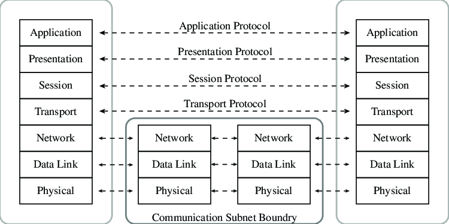
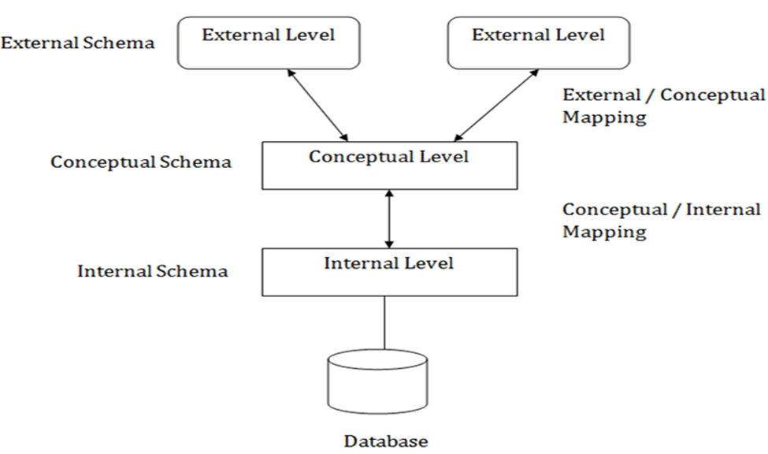
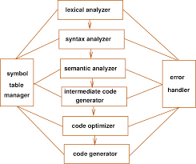
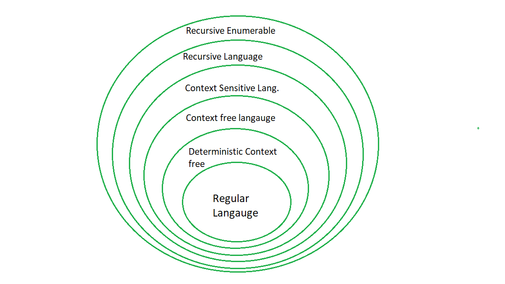
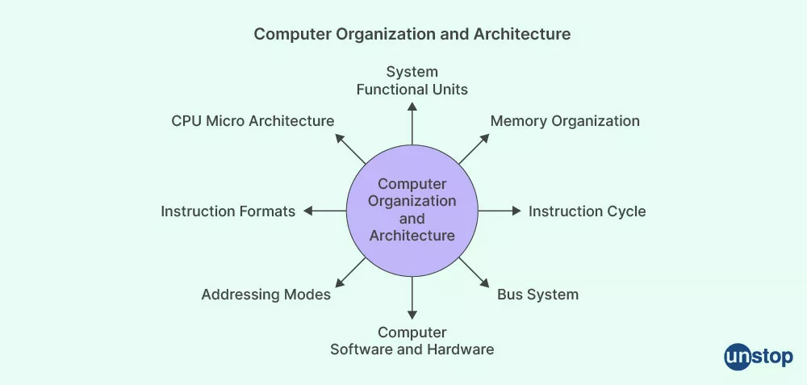
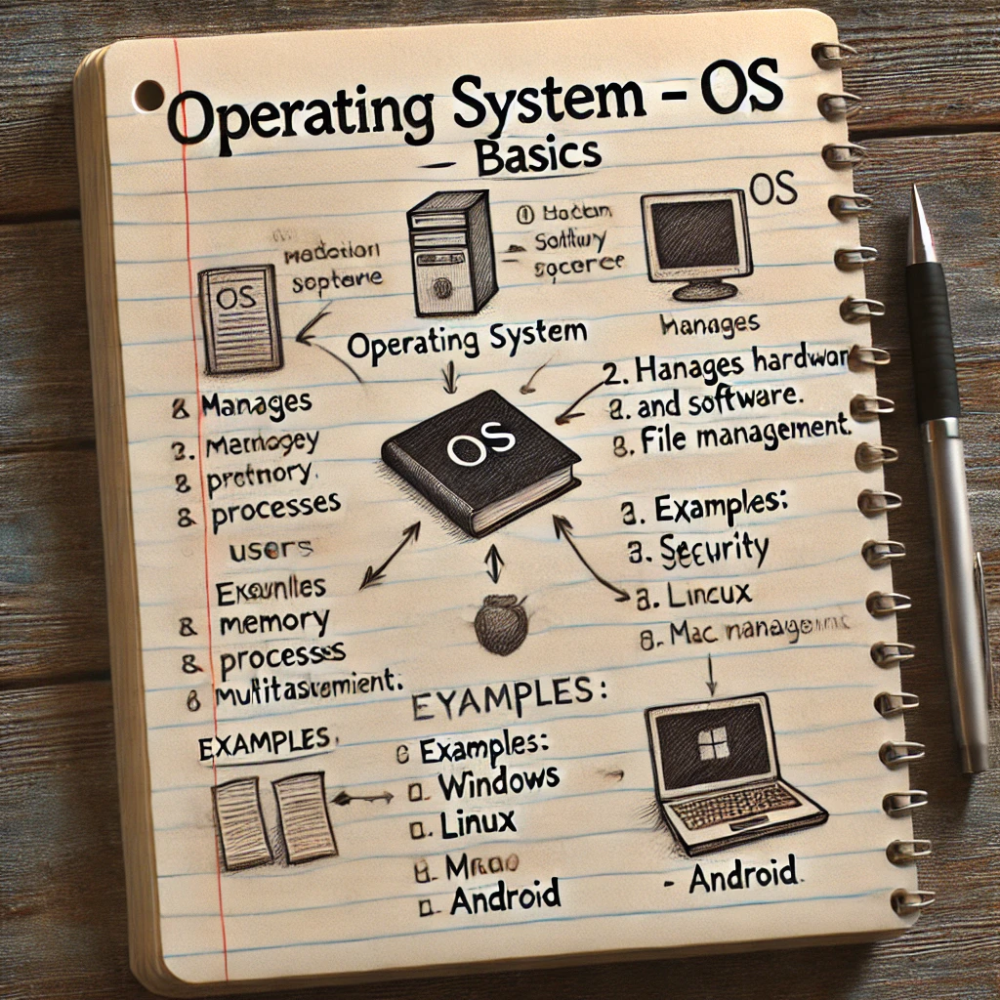
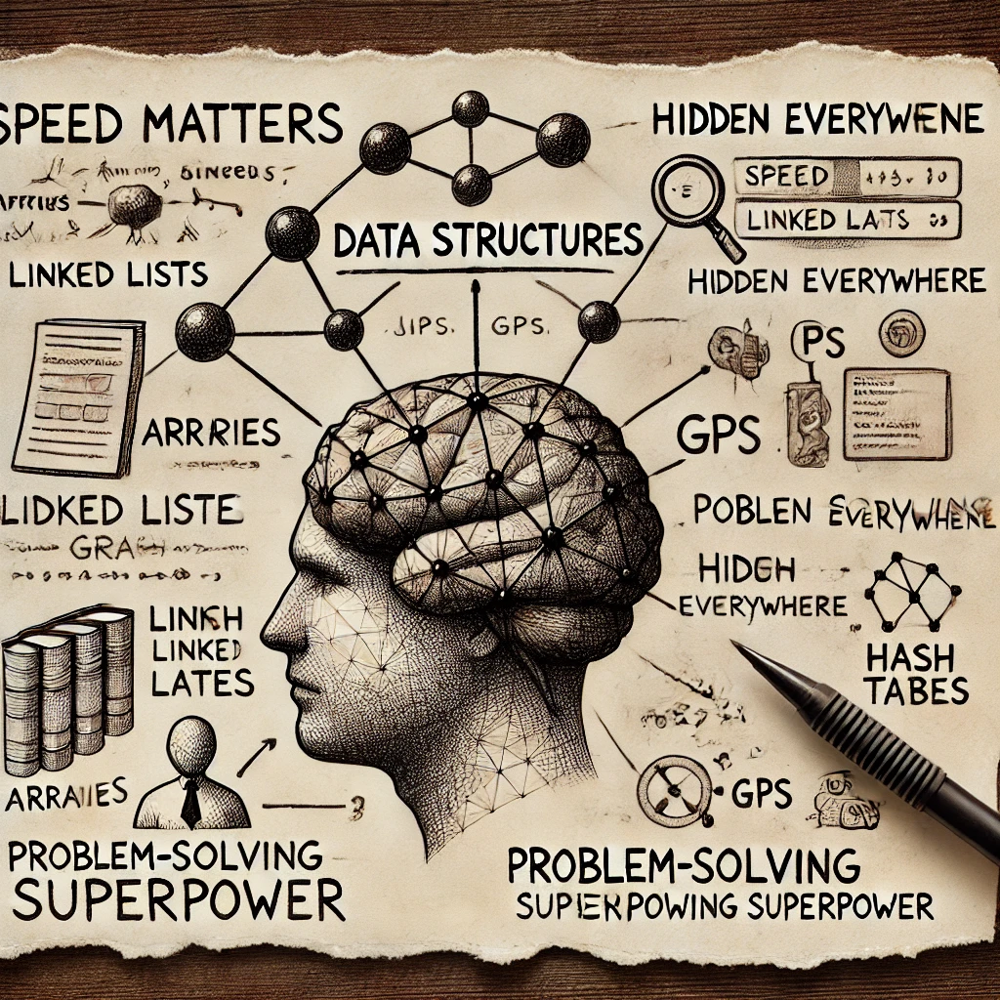
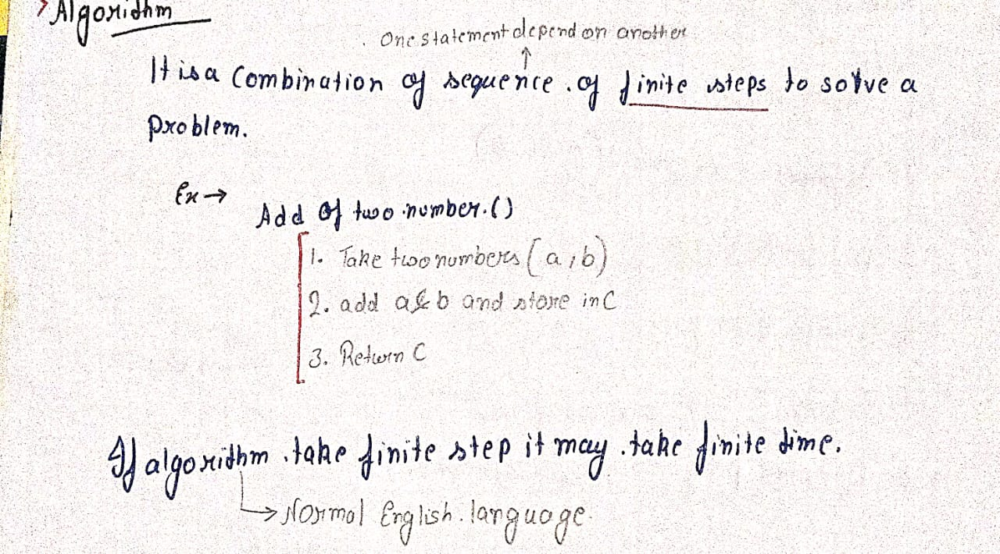

A computer network is a system that connects multiple devices to share data, resources, and communication services. These devices can include computers, servers, routers, and IoT devices, connected through wired (Ethernet) or wireless (Wi-Fi) technologies.
Basics of Networking
Types of Networks (LAN, MAN, WAN, PAN, VPN)
Network Topologies (Bus, Star, Ring, Mesh, Hybrid)
OSI vs. TCP/IP Model
OSI Model (7 Layers)
TCP/IP Model (4 Layers)
Transmission Modes
Network Devices (Hubs, Switches, Routers, etc.)
Transmission Media (Wired & Wireless)
Error Detection & Correction
MAC Protocols (ALOHA, CSMA/CD, CSMA/CA)
Ethernet & Wireless LAN Standards
IP Addressing (IPv4 & IPv6)
Routing Algorithms (Dijkstra, RIP, OSPF, BGP)
ICMP, ARP, RARP
TCP vs. UDP
TCP 3-Way Handshake & Congestion Control
DNS, HTTP/HTTPS, FTP
Email Protocols (SMTP, POP3, IMAP)
Encryption & Decryption (Symmetric vs. Asymmetric)
Firewalls, IDS, IPS
Wi-Fi, Bluetooth, RFID
Mobile Networks (2G, 3G, 4G, 5G)
Cloud Computing Basics
IoT Communication Protocols
Network Simulation (NS2, Packet Tracer, Wireshark)
Software-Defined Networking (SDN)
Computer Networking: A Top-Down Approach – Kurose & Ross
Data Communications & Networking – Forouzan
Computer Networks – Andrew S. Tanenbaum
A Database Management System (DBMS) is software that allows users to efficiently store, retrieve, manage, and secure data. It provides an interface for interacting with structured data, ensuring consistency, security, and multi-user accessibility. DBMS is widely used in applications like banking, e-commerce, healthcare, and social media.
1. Data Storage & Organization 📂
2. Data Retrieval & Query Processing 🔍
3. Data Security & Integrity 🔒
4. Concurrency Control & Multi-User Access 👥
5. Backup & Recovery ♻️
Digital Logic is the fundamental concept behind all electronic computing devices, using binary numbers (0 and 1) to process and control information through electrical circuits. It is used in computers, microprocessors, memory units, and digital systems.
Computers work on two states: ON (1) and OFF (0).
All digital circuits process information using binary arithmetic.
Perform logical operations on binary data.
AND: Outputs 1 if both inputs are 1.
OR: Outputs 1 if any input is 1.
NOT: Inverts the input (0 → 1, 1 → 0).
NAND, NOR, XOR, XNOR: More advanced logic operations.
Outputs depend only on current inputs.
Examples: Adders, Multiplexers, Encoders, Decoders.
Uses flip-flops to store past input states.
Examples: Registers, Counters, Finite State Machines.
Mathematical rules for designing and simplifying digital circuits.
Binary (Base 2): 0,1
Octal (Base 8): 0-7
Decimal (Base 10): 0-9
Hexadecimal (Base 16): 0-9, A-F
Compiler design focuses on creating software that translates high-level programming languages (C, Java, Python) into machine code that a computer's processor can execute. It ensures that programs are optimized, error-free, and efficient.
1. Lexical Analysis (Scanner) 🔍
2. Syntax Analysis (Parser) 📜
3. Semantic Analysis ✅
4. Intermediate Code Generation 🔄
5. Optimization ⚡
6. Code Generation 🏗️
7. Code Linking & Assembly 🛠️
The Theory of Computation is a branch of computer science that studies the mathematical and logical principles behind computing and problem-solving. It helps us understand what problems can be solved by computers, how efficiently they can be solved, and what problems are beyond computation.
1. Automata Theory 🤖
2. Formal Languages and Grammars 📜
3. Computability Theory 🧠
4. Complexity Theory ⚡
✅ Foundation of Algorithms & AI – Helps design efficient algorithms.
✅ Compiler Design – Automata theory helps in syntax checking and parsing.
✅ Cybersecurity & Cryptography – Complexity theory impacts encryption methods.
✅ Understanding AI Limitations – Defines the boundary of what machines can compute.
It defines the structure and behavior of a computer system.
Focuses on what a computer does rather than how it is implemented.
Determines instruction set architecture (ISA), addressing modes, CPU functionality, and data formats.
Influences performance, power efficiency, and compatibility with software.
The x86 and ARM architectures define how processors execute instructions.
A RISC (Reduced Instruction Set Computing) processor vs. CISC (Complex Instruction Set Computing) processor—each with different instruction execution strategies.
Deals with how the architecture is implemented in hardware.
Focuses on internal components such as ALU, registers, buses, cache memory, and control units.
Concerned with data flow, signal processing, and physical connections within the system.
Affects speed, efficiency, and real-world performance of a system.
A dual-core vs. quad-core processor—same architecture, but different organization.
How cache memory is structured (L1, L2, L3) impacts execution speed.
An Operating System (OS) is the fundamental software layer that manages hardware and software resources, acting as a bridge between users and computer hardware. It ensures that programs run efficiently and securely by handling process management, memory allocation, file systems, and device communication.
Process Management: Schedules and executes processes, managing CPU time for multitasking.
Memory Management: Allocates and deallocates RAM for programs while ensuring efficient memory usage.
Device Management: Facilitates communication between hardware devices (printers, USBs, etc.) and applications.
Security & Access Control: Protects against unauthorized access, ensuring system integrity.
User Interface: Provides a GUI (Graphical User Interface) or CLI (Command Line Interface) for interaction.
Networking: Manages communication over networks for data transfer and remote operations.
Understanding OS concepts is crucial for software development, cybersecurity, system administration, and performance optimization. It helps in writing efficient programs, debugging system issues, and designing better applications.
A data structure is like the backbone of efficient computing—it defines how data is stored, accessed, and manipulated. Imagine trying to find a book in a messy room versus a well-organized library. A good data structure organizes information smartly, making operations like searching, sorting, and modifying data fast and efficient.
Speed Matters → Google search, databases, and AI models rely on optimized data structures.
Hidden Everywhere → From social media feeds to GPS routing, data structures silently power the world.
Problem-Solving Superpower → Mastering data structures makes you think like a real-world problem solver, unlocking advanced coding, algorithms, and system design.
Algorithm is a human creativity which is developed by brain(dataStructure)
As Geek for Geeks Said
The word Algorithm means ” A set of finite rules or instructions to be followed in calculations or other problem-solving operations ” Or ” A procedure for solving a mathematical problem in a finite number of steps that frequently involves recursive operations”.
Algorithms are essential because they provide systematic, step-by-step procedures to solve problems efficiently and accurately. They enable automation, optimize resource usage, and allow for scalability and repeatability in both simple and complex tasks. This structured approach is crucial in software development, data processing, and various scientific and engineering disciplines, ensuring that problems are addressed in a methodical and effective manner.